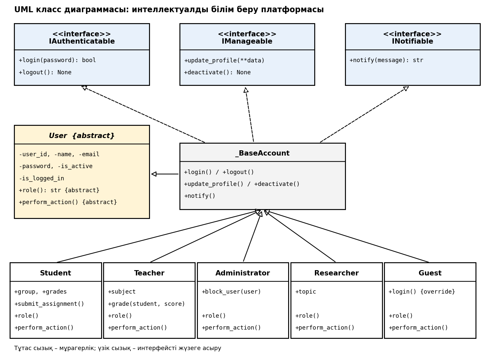

Мақсаты
Абстрактілі класс пен интерфейстерді қолданып, жоғары оқу орнына арналған білім беру платформасының объектілік моделін әзірлеу; мұрагерлік пен полиморфизмді практикада қолдану.
Платформада Student, Teacher, Administrator пайдаланушылары бар. Ортақ қасиеттері User абстрактілі класында, ал кіру, басқару, хабарландыру мүмкіндіктері интерфейстерде сипатталады.
Талаптарға сәйкестік
| Талап | Орындалуы |
|---|---|
| Кемінде 1 абстрактілі класс | User |
| Кемінде 3 интерфейс | IAuthenticatable, IManageable, INotifiable |
| Кемінде 5 класс | Student, Teacher, Administrator, Researcher, Guest |
| Полиморфизм | Тізімдегі әр User үшін perform_action() |
| UML диаграммасы | төменде |
| Тестілеу нәтижесі | 10 тест, барлығы өтті |
UML диаграммасы

Интерактивті демо
Пайдаланушыны таңдап, әрекеттерді орындап көріңіз (құпиясөздері: Студент – s123, Оқытушы – t123, Әкімші – a123, Зерттеуші – r123).
Программалық код (Python)
edu_platform.py
from abc import ABC, abstractmethod
class IAuthenticatable(ABC):
"""Интерфейс: жүйеге кіру / шығу."""
@abstractmethod
def login(self, password: str) -> bool: ...
@abstractmethod
def logout(self) -> None: ...
class IManageable(ABC):
"""Интерфейс: пайдаланушы деректерін басқару."""
@abstractmethod
def update_profile(self, **data) -> None: ...
@abstractmethod
def deactivate(self) -> None: ...
class INotifiable(ABC):
"""Интерфейс: хабарландыру қабылдау."""
@abstractmethod
def notify(self, message: str) -> str: ...
class User(ABC):
"""Абстрактілі класс: барлық пайдаланушыларға ортақ мүмкіндіктер."""
def __init__(self, user_id: int, name: str, email: str, password: str):
self.user_id = user_id
self.name = name
self.email = email
self._password = password
self.is_active = True
self.is_logged_in = False
@abstractmethod
def role(self) -> str:
"""Рөл атауы."""
@abstractmethod
def perform_action(self) -> str:
"""Рөлге тән негізгі әрекет (полиморфизм)."""
def __str__(self) -> str:
return f"[{self.role()}] #{self.user_id} {self.name} <{self.email}>"
class _BaseAccount(User, IAuthenticatable, IManageable, INotifiable):
"""Үш интерфейстің ортақ жүзеге асырылуы (қайталанбау үшін)."""
def login(self, password: str) -> bool:
if self.is_active and password == self._password:
self.is_logged_in = True
return self.is_logged_in
def logout(self) -> None:
self.is_logged_in = False
def update_profile(self, **data) -> None:
for key in ("name", "email"):
if key in data:
setattr(self, key, data[key])
def deactivate(self) -> None:
self.is_active = False
self.is_logged_in = False
def notify(self, message: str) -> str:
return f"Хабарлама -> {self.name}: {message}"
class Student(_BaseAccount):
def __init__(self, user_id, name, email, password, group):
super().__init__(user_id, name, email, password)
self.group = group
self.grades = []
def role(self): return "Студент"
def perform_action(self):
return f"{self.name} ({self.group}) оқу материалдарын игеруде."
def submit_assignment(self, title):
return f"{self.name} '{title}' тапсырмасын жіберді."
class Teacher(_BaseAccount):
def __init__(self, user_id, name, email, password, subject):
super().__init__(user_id, name, email, password)
self.subject = subject
def role(self): return "Оқытушы"
def perform_action(self):
return f"{self.name} '{self.subject}' пәні бойынша сабақ жүргізуде."
def grade(self, student, score):
student.grades.append(score)
return f"{student.name}: {score} балл қойылды."
class Administrator(_BaseAccount):
def __init__(self, user_id, name, email, password):
super().__init__(user_id, name, email, password)
def role(self): return "Әкімші"
def perform_action(self):
return f"{self.name} жүйені басқаруда (аккаунттар, рұқсаттар)."
def block_user(self, user):
user.deactivate()
return f"{user.name} аккаунты бұғатталды."
class Researcher(_BaseAccount):
"""Жаңа тип: бұрынғы кодқа тиіспей қосылды (OCP)."""
def __init__(self, user_id, name, email, password, topic):
super().__init__(user_id, name, email, password)
self.topic = topic
def role(self): return "Зерттеуші"
def perform_action(self):
return f"{self.name} '{self.topic}' тақырыбында зерттеу жүргізуде."
class Guest(_BaseAccount):
def role(self): return "Қонақ"
def perform_action(self):
return f"{self.name} тек ашық курстарды қарауда."
def login(self, password: str) -> bool: # әрекеті ерекше (override)
self.is_logged_in = True
return True
main.py (полиморфизм және тестілеу)
from edu_platform import *
def check(n, title, cond):
print(f"Тест {n}: {title} -> {'ӨТТІ' if cond else 'ҚАТЕ'}")
assert cond
s = Student(1, "Айжан", "aizhan@univ.kz", "s123", "МАГ-21")
t = Teacher(2, "Серік Б.", "serik@univ.kz", "t123", "ООП")
a = Administrator(3, "Дана К.", "dana@univ.kz", "a123")
r = Researcher(4, "Нұрлан Т.", "nurlan@univ.kz", "r123", "Адаптивті оқыту")
g = Guest(5, "Қонақ", "guest@univ.kz", "")
users = [s, t, a, r, g]
print("=== Полиморфизм: барлық пайдаланушылардың әрекеті ===")
for u in users:
print(u, "|", u.perform_action())
print("\n=== Тестілеу нәтижелері ===")
try:
User(0, "x", "x", "x"); ok = False
except TypeError:
ok = True
check(1, "абстрактілі User данасын құруға болмайды", ok)
check(2, "дұрыс құпиясөзбен кіру", s.login("s123") is True)
check(3, "қате құпиясөзбен кіруге болмайды", t.login("wrong") is False)
check(4, "Guest login-ы override жасалған", g.login("") is True)
check(5, "барлығы 3 интерфейсті жүзеге асырады",
all(isinstance(u, (IAuthenticatable, IManageable, INotifiable)) for u in users))
check(6, "оқытушы баға қояды", "85" in t.grade(s, 85) and s.grades == [85])
s.update_profile(name="Айжан С.")
check(7, "профильді жаңарту", s.name == "Айжан С.")
print(a.block_user(s))
check(8, "бұғатталған пайдаланушы кіре алмайды", s.login("s123") is False)
check(9, "хабарландыру", "Хабарлама" in r.notify("Жаңа мақала"))
check(10, "жаңа тип (Researcher) бұрынғы кодты өзгертпей қосылды",
isinstance(r, User) and r.role() == "Зерттеуші")
print("\nБарлық 10 тест сәтті өтті.")
Тестілеу нәтижелері
=== Полиморфизм: барлық пайдаланушылардың әрекеті === [Студент] #1 Айжан <aizhan@univ.kz> | Айжан (МАГ-21) оқу материалдарын игеруде. [Оқытушы] #2 Серік Б. <serik@univ.kz> | Серік Б. 'ООП' пәні бойынша сабақ жүргізуде. [Әкімші] #3 Дана К. <dana@univ.kz> | Дана К. жүйені басқаруда (аккаунттар, рұқсаттар). [Зерттеуші] #4 Нұрлан Т. <nurlan@univ.kz> | Нұрлан Т. 'Адаптивті оқыту' тақырыбында зерттеу жүргізуде. [Қонақ] #5 Қонақ <guest@univ.kz> | Қонақ тек ашық курстарды қарауда. === Тестілеу нәтижелері === Тест 1: абстрактілі User данасын құруға болмайды -> ӨТТІ Тест 2: дұрыс құпиясөзбен кіру -> ӨТТІ Тест 3: қате құпиясөзбен кіруге болмайды -> ӨТТІ Тест 4: Guest login-ы override жасалған -> ӨТТІ Тест 5: барлығы 3 интерфейсті жүзеге асырады -> ӨТТІ Тест 6: оқытушы баға қояды -> ӨТТІ Тест 7: профильді жаңарту -> ӨТТІ Айжан С. аккаунты бұғатталды. Тест 8: бұғатталған пайдаланушы кіре алмайды -> ӨТТІ Тест 9: хабарландыру -> ӨТТІ Тест 10: жаңа тип (Researcher) бұрынғы кодты өзгертпей қосылды -> ӨТТІ Барлық 10 тест сәтті өтті.
Зерттеу сұрақтары
Неліктен пайдаланушыларды бір абстрактілі класс арқылы модельдеу тиімді?
Ортақ деректер мен мінез-құлық бір жерде сақталады (DRY). Рөлге тән әдістер абстрактілі болғандықтан, әр туынды класс оларды міндетті түрде жүзеге асырады, ал жүйе бәрімен бір
Ортақ деректер мен мінез-құлық бір жерде сақталады (DRY). Рөлге тән әдістер абстрактілі болғандықтан, әр туынды класс оларды міндетті түрде жүзеге асырады, ал жүйе бәрімен бір
User типі арқылы жұмыс істейді.Интерфейстерді қолдану жүйенің кеңейтілуіне қалай әсер етеді?
Интерфейс «не істеу керек» дегенді ғана анықтайды, «қалай» дегенді класс өзі шешеді. Байланыс әлсірейді, мүмкіндіктерді бөлек дамытуға және бір класқа бірнеше интерфейс қосуға болады (Interface Segregation, Dependency Inversion).
Интерфейс «не істеу керек» дегенді ғана анықтайды, «қалай» дегенді класс өзі шешеді. Байланыс әлсірейді, мүмкіндіктерді бөлек дамытуға және бір класқа бірнеше интерфейс қосуға болады (Interface Segregation, Dependency Inversion).
Жаңа пайдаланушы типін қосқанда бұрынғы кодты өзгерту қажет пе?
Жоқ.
Жоқ.
Researcher бұрынғы кластарды өзгертпей қосылды, ал for u in users: u.perform_action() циклі өзгеріссіз жұмыс істейді (Open/Closed принципі).Қорытынды
Абстрактілі класс пен үш интерфейс негізінде платформа моделі жасалды; бес класс полиморфизм арқылы бірыңғай басқарылады, 10 тест сәтті өтті. Архитектура жаңа рөлдерді оңай қосуға мүмкіндік береді.